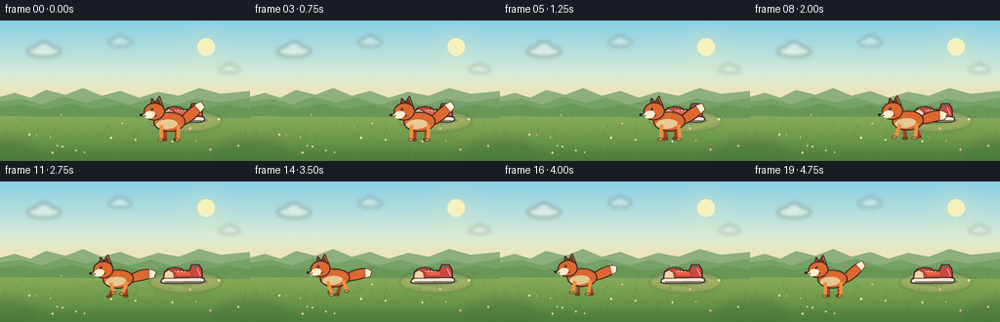
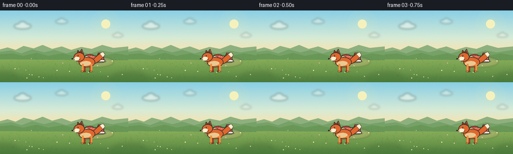

CODING AGENTS AS PIXEL WORLD MODELS
traex/DeepSeek-V4.1-Flash · dynamic_spatial_relationship_0026
点击播放 · 原生 RGB 像素
逐轮保存的候选
回放视频、检查图与代码变化。
每份候选均可单独播放。实际图片检查记录在下方工具轨迹中。
候选 01播放与检查图
点击播放 · 原生 RGB 像素

展开代码变化
--- 上一保存版本
+++ 本次保存版本
@@ -0,0 +1,492 @@
+"""Procedural 2D animation: a fox moves from in front of a shoe to its left."""
+
+from pathlib import Path
+import math
+
+import numpy as np
+from PIL import Image, ImageDraw, ImageFilter
+
+from artifact_io import save
+
+
+CASE_DIR = Path(__file__).resolve().parent
+WIDTH, HEIGHT = 256, 144
+FRAMES, FPS = 20, 4
+SS = 4 # Supersampling factor for smooth vector edges.
+RNG = np.random.default_rng(20261110)
+
+INK = (54, 42, 38, 255)
+FOX_ORANGE = (222, 104, 46, 255)
+FOX_LIGHT = (241, 143, 65, 255)
+FOX_DARK = (159, 66, 35, 255)
+CREAM = (255, 238, 206, 255)
+WHITE = (255, 250, 235, 255)
+
+
+def smoothstep(value):
+ value = max(0.0, min(1.0, value))
+ return value * value * (3.0 - 2.0 * value)
+
+
+def rgba(rgb, alpha=255):
+ return (*rgb, alpha)
+
+
+def make_background():
+ """Build the static supersampled landscape once."""
+ high_w, high_h = WIDTH * SS, HEIGHT * SS
+ y = np.linspace(0.0, 1.0, high_h, dtype=np.float32)[:, None]
+
+ sky_top = np.array([137, 207, 229], dtype=np.float32)
+ sky_mid = np.array([215, 235, 214], dtype=np.float32)
+ sky_low = np.array([249, 226, 173], dtype=np.float32)
+ ground_top = np.array([151, 185, 96], dtype=np.float32)
+ ground_low = np.array([83, 132, 63], dtype=np.float32)
+
+ pixels = np.empty((high_h, high_w, 3), dtype=np.float32)
+ horizon = 0.585
+ for row in range(high_h):
+ yn = row / (high_h - 1)
+ if yn <= horizon:
+ q = yn / horizon
+ if q < 0.66:
+ color = sky_top * (1.0 - q / 0.66) + sky_mid * (q / 0.66)
+ else:
+ q2 = (q - 0.66) / 0.34
+ color = sky_mid * (1.0 - q2) + sky_low * q2
+ else:
+ q = (yn - horizon) / (1.0 - horizon)
+ color = ground_top * (1.0 - q) + ground_low * q
+ pixels[row, :, :] = color
+
+ # Soft paper-like texture keeps the illustration from looking flat.
+ noise = RNG.normal(0.0, 2.2, (high_h, high_w, 1)).astype(np.float32)
+ pixels = np.clip(pixels + noise, 0, 255).astype(np.uint8)
+ image = Image.fromarray(pixels, "RGB").convert("RGBA")
+
+ # Sun glow, drawn as a sequence of translucent discs.
+ glow = Image.new("RGBA", image.size, (0, 0, 0, 0))
+ glow_draw = ImageDraw.Draw(glow)
+ sx, sy = 211 * SS, 27 * SS
+ for radius, alpha in ((30, 9), (24, 12), (18, 18), (13, 26)):
+ glow_draw.ellipse(
+ (sx - radius * SS, sy - radius * SS, sx + radius * SS, sy + radius * SS),
+ fill=(255, 238, 167, alpha),
+ )
+ glow_draw.ellipse(
+ (sx - 9 * SS, sy - 9 * SS, sx + 9 * SS, sy + 9 * SS),
+ fill=(255, 244, 184, 225),
+ )
+ image = Image.alpha_composite(image, glow)
+ draw = ImageDraw.Draw(image, "RGBA")
+
+ # A few pale, soft-edged clouds.
+ clouds = Image.new("RGBA", image.size, (0, 0, 0, 0))
+ cloud_draw = ImageDraw.Draw(clouds)
+ for cx, cy, scale, alpha in ((45, 31, 1.0, 118), (123, 22, 0.72, 92), (235, 50, 0.62, 82)):
+ cloud_draw.ellipse(
+ ((cx - 17 * scale) * SS, (cy - 5 * scale) * SS,
+ (cx + 17 * scale) * SS, (cy + 6 * scale) * SS),
+ fill=(255, 253, 239, alpha),
+ )
+ cloud_draw.ellipse(
+ ((cx - 8 * scale) * SS, (cy - 9 * scale) * SS,
+ (cx + 8 * scale) * SS, (cy + 4 * scale) * SS),
+ fill=(255, 254, 244, alpha),
+ )
+ clouds = clouds.filter(ImageFilter.GaussianBlur(2.2 * SS))
+ image = Image.alpha_composite(image, clouds)
+ draw = ImageDraw.Draw(image, "RGBA")
+
+ def points(seq):
+ return [(x * SS, y * SS) for x, y in seq]
+
+ # Layered hills provide a readable horizon and depth without competing with the actors.
+ draw.polygon(
+ points([
+ (0, 88), (0, 78), (15, 74), (31, 79), (47, 71), (67, 76),
+ (85, 69), (104, 77), (123, 72), (142, 79), (162, 73),
+ (183, 77), (204, 69), (226, 75), (256, 72), (256, 89),
+ ]),
+ fill=(142, 176, 126, 255),
+ )
+ draw.polygon(
+ points([
+ (0, 92), (0, 83), (22, 80), (43, 86), (64, 78), (88, 84),
+ (108, 79), (132, 86), (154, 80), (178, 87), (201, 80),
+ (224, 84), (256, 79), (256, 94),
+ ]),
+ fill=(118, 161, 103, 255),
+ )
+ draw.polygon(
+ points([
+ (0, 98), (0, 88), (24, 86), (46, 91), (73, 85), (96, 91),
+ (124, 86), (150, 92), (180, 86), (205, 91), (231, 86),
+ (256, 90), (256, 100),
+ ]),
+ fill=(105, 151, 87, 255),
+ )
+
+ # A subtle dirt clearing grounds the shoe in the middle distance.
+ patch = Image.new("RGBA", image.size, (0, 0, 0, 0))
+ patch_draw = ImageDraw.Draw(patch)
+ patch_draw.ellipse(
+ ((190 - 37) * SS, (103 - 11) * SS, (190 + 37) * SS, (103 + 11) * SS),
+ fill=(205, 180, 120, 82),
+ )
+ patch_draw.ellipse(
+ ((190 - 29) * SS, (102 - 7) * SS, (190 + 29) * SS, (102 + 7) * SS),
+ fill=(226, 202, 143, 72),
+ )
+ patch = patch.filter(ImageFilter.GaussianBlur(1.2 * SS))
+ image = Image.alpha_composite(image, patch)
+ draw = ImageDraw.Draw(image, "RGBA")
+
+ # Meadow texture: tiny grass strokes and flowers, concentrated away from the action.
+ for _ in range(210):
+ x = float(RNG.uniform(2, WIDTH - 2))
+ y = float(RNG.uniform(91, HEIGHT - 1))
+ length = float(RNG.uniform(1.2, 3.8))
+ lean = float(RNG.uniform(-1.0, 1.0))
+ color = (64 + int(RNG.integers(0, 27)), 112 + int(RNG.integers(0, 31)),
+ 48 + int(RNG.integers(0, 23)), int(RNG.integers(55, 115)))
+ draw.line(
+ ((x * SS, y * SS), ((x + lean) * SS, (y - length) * SS)),
+ fill=color,
+ width=max(1, int(0.45 * SS)),
+ )
+
+ for _ in range(18):
+ x = float(RNG.uniform(8, WIDTH - 8))
+ y = float(RNG.uniform(95, HEIGHT - 7))
+ radius = float(RNG.uniform(0.55, 1.15))
+ color = (247, 229, 177, 190) if RNG.random() < 0.7 else (235, 188, 180, 180)
+ draw.ellipse(
+ ((x - radius) * SS, (y - radius) * SS,
+ (x + radius) * SS, (y + radius) * SS),
+ fill=color,
+ )
+
+ # Darken the extreme foreground edges to frame the animation.
+ vignette = Image.new("RGBA", image.size, (0, 0, 0, 0))
+ vdraw = ImageDraw.Draw(vignette)
+ vdraw.rectangle((0, 133 * SS, WIDTH * SS, HEIGHT * SS), fill=(39, 75, 41, 34))
+ vdraw.ellipse((-26 * SS, 123 * SS, 39 * SS, 157 * SS), fill=(41, 81, 41, 55))
+ vdraw.ellipse((218 * SS, 124 * SS, 285 * SS, 160 * SS), fill=(41, 81, 41, 55))
+ vignette = vignette.filter(ImageFilter.GaussianBlur(5 * SS))
+ return Image.alpha_composite(image, vignette).convert("RGB")
+
+
+def transformed_point(point, anchor, scale, rotation):
+ x, y = point
+ cos_r, sin_r = math.cos(rotation), math.sin(rotation)
+ rx = cos_r * x - sin_r * y
+ ry = sin_r * x + cos_r * y
+ return ((anchor[0] + rx * scale) * SS, (anchor[1] + ry * scale) * SS)
+
+
+def draw_polygon(draw, local_points, anchor, scale, rotation, fill, outline=None, width=0.0):
+ pts = [transformed_point(p, anchor, scale, rotation) for p in local_points]
+ draw.polygon(pts, fill=fill)
+ if outline is not None and width > 0:
+ draw.line(pts + [pts[0]], fill=outline, width=max(1, round(width * scale * SS)), joint="curve")
+
+
+def draw_ellipse(
+ draw, center, radii, anchor, scale, rotation, fill, outline=None, width=0.0,
+ local_rotation=0.0, segments=48,
+):
+ cx, cy = center
+ rx, ry = radii
+ cos_l, sin_l = math.cos(local_rotation), math.sin(local_rotation)
+ pts = []
+ for index in range(segments):
+ angle = math.tau * index / segments
+ ex, ey = rx * math.cos(angle), ry * math.sin(angle)
+ pts.append((cx + cos_l * ex - sin_l * ey, cy + sin_l * ex + cos_l * ey))
+ draw_polygon(draw, pts, anchor, scale, rotation, fill, outline, width)
+
+
+def draw_local_line(draw, local_points, anchor, scale, rotation, fill, width, joint="curve"):
+ pts = [transformed_point(p, anchor, scale, rotation) for p in local_points]
+ draw.line(pts, fill=fill, width=max(1, round(width * scale * SS)), joint=joint)
+
+
+def cubic_bezier(p0, p1, p2, p3, count=28):
+ result = []
+ for index in range(count):
+ t = index / (count - 1)
+ u = 1.0 - t
+ x = u**3 * p0[0] + 3 * u*u*t * p1[0] + 3 * u*t*t * p2[0] + t**3 * p3[0]
+ y = u**3 * p0[1] + 3 * u*u*t * p1[1] + 3 * u*t*t * p2[1] + t**3 * p3[1]
+ result.append((x, y))
+ return result
+
+
+def ribbon(centerline, widths):
+ left, right = [], []
+ for index, point in enumerate(centerline):
+ before = centerline[max(0, index - 1)]
+ after = centerline[min(len(centerline) - 1, index + 1)]
+ dx, dy = after[0] - before[0], after[1] - before[1]
+ length = max(0.001, math.hypot(dx, dy))
+ nx, ny = -dy / length, dx / length
+ half = widths[index] * 0.5
+ left.append((point[0] + nx * half, point[1] + ny * half))
+ right.append((point[0] - nx * half, point[1] - ny * half))
+ return left + list(reversed(right))
+
+
+def draw_shoe(draw, anchor, scale=1.0):
+ """A left-facing red sneaker, drawn as a compact silhouette."""
+ x, y = anchor
+ rotation = -0.015
+
+ # Contact shadow.
+ draw_ellipse(
+ draw, (0, 0.8), (26, 4.2), anchor, scale, rotation,
+ fill=(42, 55, 36, 58), segments=40,
+ )
+
+ # Outsole and midsole.
+ draw_polygon(
+ draw,
+ [(-23.5, -2.0), (-24.0, 1.1), (-20.5, 2.2), (18.5, 2.2),
+ (22.5, 0.7), (22.0, -2.5), (17.0, -3.5), (-20.0, -3.5)],
+ anchor, scale, rotation,
+ fill=(239, 231, 210, 255), outline=INK, width=1.25,
+ )
+ draw_local_line(
+ draw, [(-20.0, 0.7), (18.8, 0.7)], anchor, scale, rotation,
+ fill=(66, 59, 55, 255), width=1.15,
+ )
+
+ # Red upper: toe at left, collar and heel at right.
+ draw_polygon(
+ draw,
+ [(-21.4, -3.2), (-20.4, -10.1), (-16.0, -13.4), (-8.8, -14.5),
+ (-3.2, -13.5), (0.2, -11.0), (6.4, -11.0), (9.0, -17.5),
+ (16.8, -17.0), (19.8, -12.0), (20.3, -3.4)],
+ anchor, scale, rotation,
+ fill=(204, 70, 61, 255), outline=INK, width=1.35,
+ )
+
+ # Toe cap, side panel, laces, eyelets, and heel tab.
+ draw_polygon(
+ draw,
+ [(-21.0, -3.4), (-19.8, -9.5), (-15.7, -12.2), (-10.7, -9.1),
+ (-10.0, -3.5)],
+ anchor, scale, rotation,
+ fill=(245, 211, 173, 255), outline=(112, 67, 54, 255), width=0.75,
+ )
+ draw_polygon(
+ draw,
+ [(-8.0, -12.9), (-2.2, -10.3), (6.2, -10.4), (8.6, -5.4),
+ (-6.6, -5.1), (-9.3, -8.5)],
+ anchor, scale, rotation,
+ fill=(235, 95, 72, 255), outline=(111, 47, 43, 255), width=0.65,
+ )
+ draw_local_line(
+ draw, [(-9.0, -10.9), (2.3, -9.9)], anchor, scale, rotation,
+ fill=(249, 230, 194, 255), width=1.05,
+ )
+ for lx, ly in ((-7.3, -11.2), (-3.6, -10.8), (0.1, -10.4)):
+ draw_ellipse(
+ draw, (lx, ly), (0.55, 0.55), anchor, scale, rotation,
+ fill=(67, 54, 48, 255), segments=16,
+ )
+ draw_local_line(
+ draw, [(10.5, -15.4), (15.7, -15.0)], anchor, scale, rotation,
+ fill=(41, 131, 124, 255), width=2.2,
+ )
+ draw_local_line(
+ draw, [(14.8, -13.0), (17.9, -5.3)], anchor, scale, rotation,
+ fill=(250, 218, 179, 255), width=0.8,
+ )
+
+
+def fox_pose(index):
+ """Return world position, body attitude, gait phase, and run amount."""
+ if index <= 4:
+ progress = 0.0
+ run_amount = 0.0
+ elif index <= 6:
+ progress = 0.0
+ run_amount = smoothstep((index - 4) / 2.0) * 0.45
+ elif index <= 15:
+ progress = smoothstep((index - 6) / 9.0)
+ run_amount = 1.0
+ else:
+ progress = 1.0
+ run_amount = max(0.0, 1.0 - (index - 15) / 3.0)
+
+ start_x, end_x = 173.0, 84.0
+ x = start_x * (1.0 - progress) + end_x * progress
+ base_y = 122.0 * (1.0 - progress) + 117.0 * progress
+ scale = 1.055 * (1.0 - progress) + 0.985 * progress
+ phase = index * 1.52
+ bob = -abs(math.sin(phase)) * 2.0 * run_amount
+ if 16 <= index <= 18:
+ bob -= 0.7 * math.sin((index - 15) * math.pi / 3.0)
+ return x, base_y + bob, scale, phase, run_amount, progress
+
+
+def draw_fox(draw, anchor, scale, rotation, phase, run_amount, frame_index):
+ # Tail sweeps up while standing and streams behind during the run.
+ wag = math.sin(phase * 0.72) * (1.0 - 0.55 * run_amount)
+ idle_tail = cubic_bezier((10, -16), (18, -20), (27, -30), (33, -34))
+ run_tail = cubic_bezier((10, -16), (20, -19), (31, -23), (38, -20))
+ tail_center = []
+ for idle, running in zip(idle_tail, run_tail):
+ sway = wag * 2.0 * (1.0 - 0.55 * run_amount)
+ tail_center.append((
+ idle[0] * (1.0 - run_amount) + running[0] * run_amount,
+ idle[1] * (1.0 - run_amount) + running[1] * run_amount + sway * 0.35,
+ ))
+ widths = [6.0 + 4.2 * math.sin(math.pi * i / (len(tail_center) - 1)) for i in range(len(tail_center))]
+ tail_poly = ribbon(tail_center, widths)
+ draw_polygon(draw, tail_poly, anchor, scale, rotation, FOX_DARK, INK, 1.0)
+ inner_widths = [max(1.0, width - 1.5) for width in widths]
+ draw_polygon(draw, ribbon(tail_center, inner_widths), anchor, scale, rotation, FOX_ORANGE)
+
+ tip_start = int(len(tail_center) * 0.72)
+ tip_center = tail_center[tip_start:]
+ tip_widths = widths[tip_start:]
+ draw_polygon(
+ draw, ribbon(tip_center, tip_widths), anchor, scale, rotation,
+ CREAM, outline=(107, 75, 57, 255), width=0.55,
+ )
+
+ # Legs: far pair first in a darker tone, then near pair.
+ def leg(hip_x, leg_index, color, far=False):
+ offset = leg_index * math.pi * 0.75
+ swing = math.sin(phase + offset) * (5.3 * run_amount + 0.35)
+ lift = max(0.0, -math.cos(phase + offset)) * 4.2 * run_amount
+ if far:
+ swing *= 0.82
+ lift *= 0.72
+ knee = (hip_x + swing * 0.48, -7.2 - lift * 0.26)
+ paw = (hip_x + swing, -lift)
+ draw_local_line(draw, [(hip_x, -14.0), knee, paw], anchor, scale, rotation, color, 3.5)
+ draw_ellipse(
+ draw, (paw[0] - 0.8, paw[1] + 0.2), (2.4, 1.35),
+ anchor, scale, rotation, fill=color, outline=INK, width=0.45,
+ )
+
+ leg(7.2, 1, FOX_DARK, far=True)
+ leg(-3.8, 3, FOX_DARK, far=True)
+
+ # Body and cream belly.
+ draw_ellipse(
+ draw, (0.5, -17.2), (15.2, 9.2), anchor, scale, rotation,
+ fill=FOX_ORANGE, outline=INK, width=1.2,
+ )
+ draw_ellipse(
+ draw, (-2.0, -14.8), (10.4, 4.7), anchor, scale, rotation,
+ fill=(248, 208, 156, 210), local_rotation=-0.06,
+ )
+
+ leg(9.2, 0, FOX_LIGHT)
+ leg(-7.2, 2, FOX_LIGHT)
+
+ # Ears sit behind the head; one is slightly darker for depth.
+ draw_polygon(
+ draw, [(-18.2, -32.4), (-16.6, -40.1), (-11.4, -33.0)],
+ anchor, scale, rotation, fill=FOX_DARK, outline=INK, width=1.0,
+ )
+ draw_polygon(
+ draw, [(-14.0, -34.2), (-9.2, -42.3), (-5.5, -32.2)],
+ anchor, scale, rotation, fill=FOX_LIGHT, outline=INK, width=1.0,
+ )
+ draw_polygon(
+ draw, [(-12.7, -35.2), (-9.7, -40.1), (-7.3, -33.8)],
+ anchor, scale, rotation, fill=(110, 56, 44, 255),
+ )
+
+ # Head, muzzle, cheek, nose, and eye.
+ draw_ellipse(
+ draw, (-14.2, -27.1), (10.0, 8.2), anchor, scale, rotation,
+ fill=FOX_ORANGE, outline=INK, width=1.15, local_rotation=-0.08,
+ )
+ draw_polygon(
+ draw, [(-18.4, -27.3), (-27.4, -23.7), (-17.7, -20.8), (-12.2, -23.2)],
+ anchor, scale, rotation, fill=FOX_LIGHT, outline=INK, width=0.95,
+ )
+ draw_polygon(
+ draw, [(-18.0, -23.2), (-27.0, -23.6), (-18.7, -20.9)],
+ anchor, scale, rotation, fill=CREAM,
+ )
+ draw_ellipse(
+ draw, (-18.7, -24.0), (5.4, 3.7), anchor, scale, rotation,
+ fill=CREAM, local_rotation=-0.18,
+ )
+ draw_ellipse(
+ draw, (-27.1, -23.8), (1.55, 1.25), anchor, scale, rotation,
+ fill=(45, 37, 35, 255), segments=20,
+ )
+ draw_ellipse(
+ draw, (-16.7, -29.4), (1.3, 1.55), anchor, scale, rotation,
+ fill=(45, 36, 34, 255), segments=20,
+ )
+ draw_ellipse(
+ draw, (-17.1, -29.9), (0.42, 0.42), anchor, scale, rotation,
+ fill=(255, 248, 224, 255), segments=12,
+ )
+ draw_ellipse(
+ draw, (-23.1, -23.0), (0.8, 0.48), anchor, scale, rotation,
+ fill=(78, 48, 42, 255), segments=12,
+ )
+
+ # A few darker guard hairs on the back add fox-like texture.
+ for x, y, length in ((4, -24, 3.2), (0, -25.3, 2.8), (-4, -24.9, 2.5)):
+ draw_local_line(
+ draw, [(x, y), (x + 1.0, y - length)], anchor, scale, rotation,
+ fill=(133, 65, 37, 190), width=0.55,
+ )
+
+
+def draw_dust(draw, anchor, phase, frame_index, run_amount):
+ if run_amount < 0.2:
+ return
+ for puff_index in range(4):
+ offset = 13.0 + puff_index * 5.8 + (frame_index % 3) * 1.2
+ wobble = math.sin(phase * 0.5 + puff_index * 1.7) * 1.5
+ px = anchor[0] + offset
+ py = 118.5 - puff_index * 1.3 + wobble
+ radius = 1.5 + puff_index * 0.55
+ alpha = int((42 - puff_index * 7) * run_amount)
+ draw.ellipse(
+ ((px - radius) * SS, (py - radius * 0.55) * SS,
+ (px + radius) * SS, (py + radius * 0.55) * SS),
+ fill=(224, 204, 151, max(0, alpha)),
+ )
+
+
+def render_frame(background, index):
+ frame = background.convert("RGBA")
+ layer = Image.new("RGBA", frame.size, (0, 0, 0, 0))
+ draw = ImageDraw.Draw(layer, "RGBA")
+
+ # The shoe is farther back: higher on screen, slightly smaller, and drawn first.
+ draw_shoe(draw, (188.0, 102.0), scale=0.96)
+
+ fox_x, fox_y, fox_scale, phase, run_amount, progress = fox_pose(index)
+ draw_dust(draw, (fox_x, fox_y), phase, index, run_amount)
+ rotation = -0.035 * run_amount
+ draw_fox(draw, (fox_x, fox_y), fox_scale, rotation, phase, run_amount, index)
+
+ frame = Image.alpha_composite(frame, layer)
+ return np.asarray(frame.convert("RGB").resize((WIDTH, HEIGHT), Image.Resampling.LANCZOS))
+
+
+def main():
+ background = make_background()
+ frames = np.stack([render_frame(background, index) for index in range(FRAMES)])
+ assert frames.shape == (FRAMES, HEIGHT, WIDTH, 3), frames.shape
+ assert frames.dtype == np.uint8
+ save(frames, CASE_DIR)
+ print(f"Saved {FRAMES} frames to {CASE_DIR}")
+
+
+if __name__ == "__main__":
+ main()
候选 02播放与检查图
点击播放 · 原生 RGB 像素


展开代码变化
--- 上一保存版本
+++ 本次保存版本
@@ -62,7 +62,7 @@
# Soft paper-like texture keeps the illustration from looking flat.
noise = RNG.normal(0.0, 2.2, (high_h, high_w, 1)).astype(np.float32)
pixels = np.clip(pixels + noise, 0, 255).astype(np.uint8)
- image = Image.fromarray(pixels, "RGB").convert("RGBA")
+ image = Image.fromarray(pixels).convert("RGBA")
# Sun glow, drawn as a sequence of translucent discs.
glow = Image.new("RGBA", image.size, (0, 0, 0, 0))
可观测工具轨迹
实际执行的命令与返回图片。
命令 1exit 0
/bin/bash -c "pwd && rg --files -g 'prompt.txt' -g 'GENERATION_RULES.md' -g 'task_spec.json' -g '"'!node_modules'"'"
命令 2exit 0
/bin/bash -c "find . -maxdepth 2 -type f -printf '%p\\n' | sort | head -200"
命令 3exit 0
/bin/bash -c 'cat prompt.txt'
命令 4exit 0
/bin/bash -c 'cat GENERATION_RULES.md'
命令 5exit 0
/bin/bash -c 'cat task_spec.json'
命令 6exit 0
/bin/bash -c "sed -n '1,240p' artifact_io.py"
命令 7exit 0
/bin/bash -c 'python generate.py'
命令 8exit 0
/bin/bash -c 'file inspection.png transition_check.png frames/00.png frames/10.png frames/19.png && identify inspection.png transition_check.png 2>/dev/null || true'
命令 9exit 0
/bin/bash -c 'command -v chafa || command -v viu || command -v jp2 || command -v img2txt || true'
命令 10exit 0
/bin/bash -c "python - <<'PY'
from PIL import Image
import numpy as np
for name in ['frames/00.png','frames/04.png','frames/10.png','frames/15.png','frames/19.png']:
a=np.asarray(Image.open(name).convert('RGB'))
# rough orange/red actor masks
orange=((a[:,:,0]>150)&(a[:,:,0]>1.25*a[:,:,1])&(a[:,:,1]>40)&(a[:,:,2]<100))
red=((a[:,:,0]>145)&(a[:,:,0]>1.45*a[:,:,1])&(a[:,:,2]<100))
yy,xx=np.where(orange)
ry,rx=np.where(red)
print(name, 'orange', int(orange.sum()), (int(xx.min()),int(yy.min()),int(xx.max()),int(yy.max())) if len(xx) else None,
'red', int(red.sum()), (int(rx.min()),int(ry.min()),int(rx.max()),int(ry.max())) if len(rx) else None)
PY"命令 11exit 0
/bin/bash -c "python - <<'PY'
from PIL import Image
import numpy as np
chars=' .:-=+*#%@'
for fn in ['frames/00.png','frames/04.png','frames/10.png','frames/15.png','frames/19.png']:
im=Image.open(fn).convert('RGB').resize((64,36),Image.Resampling.NEAREST)
a=np.asarray(im).astype(float)
r,g,b=a[:,:,0],a[:,:,1],a[:,:,2]
# classify: orange fox O, red shoe R, dark D, cream C, sky ., grass g/G
cls=np.full((36,64),' ',dtype='<U1')
cls[(g>r*1.02)&(g>b*1.05)]='g'
cls[g>105]='G'
cls[(r>155)&(r>g*1.28)&(g<145)&(b<115)]='O'
cls[(r>135)&(r>g*1.45)&(g<100)&(b<105)]='R'
cls[(r>210)&(g>185)&(b>145)&(np.abs(r-g)<65)]='C'
cls[(r<105)&(g<100)&(b<100)]='D'
# horizon lower
cls[:17]=np.where(cls[:17]==' ', '.', cls[:17])
print('\\n---',fn,'---')
for row in cls:
print(''.join(row))
PY"命令 12exit 0
/bin/bash -c "python - <<'PY'
from PIL import Image
import numpy as np
for i in range(20):
a=np.asarray(Image.open(f'frames/{i:02d}.png').convert('RGB')).astype(np.int16)
r,g,b=a[:,:,0],a[:,:,1],a[:,:,2]
# saturated orange and red, excluding cream/skin and meadow
m=(r>125)&(r>g*1.20)&(b<120)&(g<170)
yy,xx=np.where(m)
# fox and shoe split by x=140 start, x=160 end; actor total extents anyway
print(i, len(xx), (xx.min(),yy.min(),xx.max(),yy.max()))
PY"命令 13exit 0
/bin/bash -c "python generate.py && python - <<'PY'
from pathlib import Path
import json, numpy as np
from PIL import Image
root=Path('.')
spec=json.loads((root/'task_spec.json').read_text())
frames=sorted((root/'frames').glob('*.png'))
assert len(frames)==spec['frames']
arrays=[np.asarray(Image.open(p).convert('RGB')) for p in frames]
assert all(a.shape==(spec['height'],spec['width'],3) and a.dtype==np.uint8 for a in arrays)
packed=np.load(root/'pixels.npz')['pixels']
assert packed.shape==(spec['height'],spec['width'],spec['frames'])
assert packed.dtype==np.uint32
changes=[int(np.any(arrays[i]"'!=arrays[i-1])) for i in range(1,len(arrays))]
assert all(changes), changes
assert (root/'"'index.html').stat().st_size>10000
print('frames',len(frames),'shape',arrays[0].shape,'pixels',packed.shape,packed.dtype)
print('consecutive_frame_changes',sum(changes),'of',len(changes))
print('artifacts', sorted(p.name for p in root.iterdir() if p.is_file()))
PY"命令 14exit 0
/bin/bash -c "python - <<'PY'
from PIL import Image
import numpy as np
from pathlib import Path
imgs=[np.asarray(Image.open(f'frames/{i:02d}.png').convert('RGB')) for i in range(20)]
# verify actor movement with a broad warm-color mask in the action band.
boxes=[]
for i,a in enumerate(imgs):
r,g,b=[a[:,:,j].astype(np.int16) for j in range(3)]
m=(r>125)&(r>g*1.20)&(b<120)&(g<170)&(np.indices(r.shape)[0]>65)&(np.indices(r.shape)[0]<130)
yy,xx=np.where(m)
boxes.append((int(xx.min()),int(yy.min()),int(xx.max()),int(yy.max())))
print('start_actor_bbox',boxes[0])
print('middle_actor_bbox',boxes[10])
print('end_actor_bbox',boxes[19])
assert boxes[0][0]>boxes[19][0]+70
assert boxes[19][0] < 75
# Check frame border remains valid and nonblank.
print('mean_luminance_range', round(float(min(a.mean() for a in imgs)),2), round(float(max(a.mean() for a in imgs)),2))
PY"保存候选 2 份；完成命令 14 次；可验证图片返回 0 张。原始 API 响应与完整日志保留在本地。